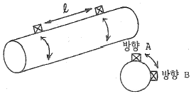
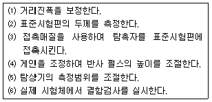

초음파비파괴검사기사(구) (2010-03-07 기출문제)
1과목: 초음파탐상시험원리
1. 초음파빔 감쇠에 대한 음압의 식으로 옳은 것은?(단, P0는 d=0 인 지점에서의 음압, P는 거리 d에서의 음압, a는 감쇠계수, d는 재질내에서의 초음파 진행거리이다.)
- P = P0*e-ad
- P = a*e-ad
- P = d*e-ad
- P = P0*d*e-ad
(정답률: 알수없음)

2. 공진법을 이용하여 두께를 측정하고 한다. 시험체내의 초음파속도가 6.4x105cm/s 이고, 1차 공진주파수(기본공진주파수)가 3.2x105Hz 라면 이 시험체의 두께는?
- 0.5 cm
- 1cm
- 2cm
- 4cm
(정답률: 알수없음)
3. 초음파탐상시험의 투과법에서 탐촉자를 선정할 때, 송신 효율과 수신효율이 가장 효과적이도록 옳게 조합된 것은?
- 티탄산바륨/황산리튬
- 티탄산바륨/니오비움산납
- 황산리튬/수정
- 황산리튬/니오비움산리튬
(정답률: 알수없음)
4. 강으로 제작된 STB-A1 시험편을 이용하여 두께 25mm를 음속으로 5920m/s로 영점조정을 하였다. 검사하려는 시험체가 알루미늄(Al)으로서 음속이 6200m/s일 때, STB-A1과 동일 치수의 시험체 두께(mm)는 얼마로 측정되는가?
- 23.8
- 24.6
- 26.2
- 29.3
(정답률: 알수없음)
5. 다른 매질내로 종파가 입사할 때 제 1 임계각보다 작은 각도로 입사하려면 이 매질 내에 존재할 수 있는 파형은?
- 종파 및 횡파
- 종파 및 포면파
- 종파만 존재한다.
- 횡파만 존재한다.
(정답률: 알수없음)
6. 초음파 탐상기의 일반적인 취급사항으로 틀린 것은?
- 시험 전(前) 감도 조정을 정확하게 하여야 한다.
- 시험 장치는 습도가 높은 곳에 보관하여야 한다.
- 취급 자격이 있는 자가 장치를 취급하여야 한다.
- 시험 장치와 정격 용량은 맞는 것을 사용하여야 한다.
(정답률: 알수없음)
7. 결함의 생성 중에는 검출이 용이하지만 결함의 생성이 정지된 상태에서는 검출이 어려운 비파괴검사법은?
- 초음파(Ultrasonic)탐상시험
- 방사선(Radiography)투과시험
- 와전류(Eddy Current)탐상시험
- 음향방출(Acoustic Emission)시험
(정답률: 알수없음)
8. 자분탐상시험과 비교한 침투탐상시험의 장점은?
- 자분탐상시험에 비하여 표면하의 결함검출이 용이하다.
- 자분탐상시험에 비하여 자성체의 탐상에 신뢰도가 높다.
- 자분탐상시험에 비하여 표면의 원형결함 검출 감도가 높다.
- 자분탐상시험에 비하여 시간이 경과해도 지시모양의 변화가 없다.
(정답률: 알수없음)
9. 초음파탐상시험의 장점에 대한 설명으로 틀린 것은?
- 라미네이션과 같은 결함탐상에 유용하다.
- 균열과 같은 미세한 결함을 검출할 수 있다.
- 검사되는 시험체의 두께에 대한 제한이 적다.
- 조대한 결정입자를 가진 시험체의 검사에 적합하다.
(정답률: 알수없음)
10. 일반적으로 매 검사마다 소모성 재료비가 가장 많이 소요되는 비파괴검사는?
- X선투과시험
- 와전류탐상시험
- 초음파탐상시험
- X선투시영상시험
(정답률: 알수없음)
11. 각종 비파괴검사의 적용에 관한 설명으로 틀린 것은?
- 와전류탐상검사는 자성체의 내부결함 검사에 적용한다.
- 초음파탐상검사는 내부결함이나 불연속 검사에 적용한다.
- 침투탐상검사는 표면의 작은 균열이나 흠집 검출에 적용한다.
- 방사선투과검사는 내부의 결함이나 형태를 검사하는데 적용한다.
(정답률: 알수없음)
12. 와전류탐상시험으로 검사가 어려운 것은?
- 내부결함검사
- 관의 표면균열
- 도금두께 측정
- 관의 외경변화
(정답률: 알수없음)
13. 전자포획 할로겐 검출기의 특성에 대한 설명으로 틀린 것은?
- 구성 물질에 해가 되는 가열전극이 없다.
- 가열양극법과 비교하여 교정이 안정적이다.
- 대기 중에 존재하는 불순물을 검출하는데 높은 감도를 갖는다.
- 일시적으로 감도가 감소되어도 과노출이나 사용 정도에 따라 교정이 변하거나 장비가 손상되지 않는다.
(정답률: 알수없음)
14. 결함 면적이 동일하다 가정할 때, 와전류탐상시험으로 가장 잘 검추할 수 있는 결함은?
- 와류가 흐르는 방향에 평행인 균열
- 봉의; 이측 표면으로 뻗쳐 있는 방사상 균열
- 직경 5cm 봉의 중간(2.5cm) 부위에 있는 결함
- 직경 5cm 봉의 표면으로부터 2cm 깊이에 있는 방사상 균열
(정답률: 알수없음)
15. 초음파탐상시험으로 알 수 없는 것은?
- 주파수의 측정
- 미세균열 검출
- 시험편의 두게
- 평균 입자의 크기
(정답률: 알수없음)
16. 자화곡선과 관련된 내용의 설명으로 옳은 것은?
- 항자력의 크기는 자화의 강도와 무관하다.
- 잔류자기가 많이 남게 되는 것은 저탄소강이다.
- 고탄소강과 같이 자화가 어려운 재질은 투자율이 낮다.
- 투자율(μ)은 보자력과 함께 자계의 세기를 결정하게 된다.
(정답률: 알수없음)
17. 프로드를 이용한 원형자화법에서 3인치 미만의 프로드 간격을 사용하지 않는 주된 이유는?
- 국부과열을 방지하기 위함이다.
- 시험자가 감전될 우려가 있기 때문이다.
- 전극 주위로 자분이 응집되기 때문이다.
- 아크 발생으로 인한 시험체의 소손을 방지하기 위함이다.
(정답률: 알수없음)
18. 침투탐상시험에서 침투액의 점성에 대한 설명 중 옳은 것은?
- 온도가 낮을수록 점성은 높아지고 침투시간은 길어진다.
- 온도가 낮을수록 점성은 낮아지고 침투시간은 짧아진다.
- 온도가 높을수록 점성은 높아지고 침투시간은 짧아진다.
- 온도가 높을수록 점성은 낮아지고 침투시간은 길어진다.
(정답률: 알수없음)
19. 1[atm] 에 대한 단위의 환산이 틀린 것은?
- 7.6 torr
- 14,7 psi
- 101.3 kPa
- 760 mmHg
(정답률: 알수없음)
20. 서로의 관계가 반비례가 아닌 비례관계가 성립되는 것은?
- 주파수와 파장
- 방사능과 비방사능
- 전기저항과 전기전도도
- 표피효과와 전류의 침투깊이
(정답률: 알수없음)
2과목: 초음파탐상검사
21. B 스캔 장비에 있는 sweep rate 발생기는 어디에 직접 연결되는가?
- 수평 소인회로
- 펄스발생기 회로
- RF 증폭회로
- CRT 강도회로
(정답률: 알수없음)
22. 송신탐촉자를 사용하여 시험체를 통과시킨 후 반대 쪽에 다른 탐촉자로 초음파를 수신하는 검사 방법은?
- 수직법
- 투과법
- 표면파법
- 경사각법
(정답률: 알수없음)
23. 초음파탐상 장치의 구성부가 아닌 회로는?
- 증폭 회로
- 통신 회로
- 펄스 회로
- 마커 회로
(정답률: 알수없음)
24. 두께 20mm 인 용접부를 60o인 경사각탐촉자를 이용하여 탐상했을 때 초음파빔 거리가 70mm에서 결함이 검출되었다면 이 결함은 모재 포면에서 탐촉자 입사점으로부터 약 mm 위치(탐촉자-결함거리)에 존재하는가?
- 17mm
- 23mm
- 61mm
- 80mm
(정답률: 알수없음)
25. 그림과 같은 주강품의 검사시 탐상방향(방향A, 방향B)에 관계없이 제품 중앙에서 방생된 유사한 높이의 결함 에코가 일정길이(ℓ)만큼 존재하는 것을 알았다. 어떤 결함으로 추정되는가?

- 기포
- 균열
- 개재물
- 수축공
(정답률: 알수없음)
26. 두께 60mm인 강판에 탐상표면으로부터 30mm 깊이에 큰 결함이 탐상표면과 평행하게 존재한다면 가장 적합한 탐상 방법은?
- 수직 탐상법
- 판파 탐상법
- 표면파 탐상법
- 경사각 탐상법
(정답률: 알수없음)
27. 경사각 탐촉자의 입사점과 굴절각을 측정할 경우 에코의 높이는 몇 % 정도로 하는 것이 가장 적절한가?
- 10∼20%
- 25∼45%
- 50∼80%
- 90∼100%
(정답률: 알수없음)
28. 초음파탐상검사시 탐상면에 접촉매질을 적용하는 가장 큰 이유는?
- 탐촉자의 소모를 방지하기 위하여
- 탐상면의 마모를 방지하기 위하여
- 탐촉자의 움직임을 원할히 하기 위하여
- 초음파의 전달효율을 좋게 하기 위하여.
(정답률: 알수없음)
29. 초음파 종파속도 6000m/s, 두께 50mm인 강재의 내부결함을 찾기 위해서 수직형 종파 탐촉자를 표면에 직접 접촉시켜 펄스 반사법을 이용하여 신호를 받아 오실로스코프위에 초음파를 송신한 순간으로부터 15μs 후에 첫 번째 반사펄스가 위치하였다. 내부 결함은 탐촉자가 있는 표면에서 얼마의 깊 이에 있는가?
- 25mm
- 30mm
- 35mm
- 45mm
(정답률: 알수없음)
30. A-스캔 초음파 탐상기를 사용하여 결함을 탐상하는 경우 다음 내용을 올바른 순서로 나열한 것은?

- ⑴→⑵→⑶→⑷→⑸→⑹
- ⑶→⑵→⑷→⑸→⑴→⑹
- ⑶→⑵→⑸→⑷→⑴→⑹
- ⑶→⑷→⑴→⑸→⑵→⑹
(정답률: 알수없음)
31. STB-G 표준 시험편의 주된 용도가 아닌 것은?
- 수직 탐상의 감도조정
- 수직 탐상 결과의 판정
- 탐상기의 증폭직진성의 체크
- 수직 탐촉자의 거리 진폭 특성 체크
(정답률: 알수없음)
32. CRT상에 시험체 표면으로부터 1⅜인치 길이에 존재하는 불연속지시가 나타났다. 이 불연속을 어떤 대비 시험편과 비교하는 것이 가장 적절한가?
- 탐상면-불연속간 거리가 1¾인치인 대비시험편
- 탐상면-불연속간 거리가 1⅛인치인 대비시험편
- 탐상면-불연속간 거리가 1¼인치인 대비시험편
- 탐상면-불연속간 거리가 1⅝인치인 대비시험편
(정답률: 알수없음)
33. 판재를 경사각탐상할 때 가장 검출하기 어려운 결함은?
- 음파에 수직인 균열
- 표면에 평행인 균열
- 작은 결함들이 연속된 것.
- 갖가지 방향으로 있는 개재들.
(정답률: 알수없음)
34. 초음파탐상기의 성능과 관련이 없는 것은?
- 근거리 음장
- 증폭의 직선성
- 리젝션(Rejection)
- 분해능(Resolution)
(정답률: 알수없음)
35. 탠덤 탐상법(Tandem technique)에 대한 설명 중 틀린 것은?
- 경사각탐상에서 탐상면에 수직한 결함을 검출하기 위해 탐촉자 2개를 전후로 배치하고 한 쪽은 송신용으로 다른 쪽은 수신용으로 하는 탐상법이다.
- 최소 입사점간 거리는 2개의 경사각 탐촉자를 동일방향으로 향하게 전후로 배치하고 양자를 가능한 한 근접시켰을 때 상호 입사점간 거리를 말한다.
- X홈 맞대기 용접부에 바랭하는 융합불량 검출에는 텐덤 탐상법이 적합하다.
- X홈 맞대기용접부에 발생하는 백가우징(Back Gauging)부의 결함검출에는 텐덤 탐상법이 적합하다.
(정답률: 알수없음)
36. 결함에코 높이가 비교적 낮고 폭이 좁은 특성이 있으며, 진자주사를 하거나 반대쪽에서 주사를 하여도 거의 일정한 펄스 강도를 나타냈다면 검출된 결함은?
- 균열
- 기공
- 융합불량
- 슬래그 혼입
(정답률: 알수없음)
37. 재질의 결정구조가 조대한 두께 250mm 주조품을 수직탐상법으로 검사할 때, 침투력이 가장 큰 탐촉자의 주파수로 볼 수 있는 것은?
- 1MHz
- 5MHz
- 10MHz
- 25MHz
(정답률: 알수없음)
38. 배관의 길이이음 용접부의 경사각탐상에 대한 설명 중 틀린것은?
- 탐촉자와 시험체의 접촉조건이 평판 용접부의 검사 때와 다르다.
- 외면으로부터 탐상하는 경우 내면으로의 입사각이 평판의 경우와 다르다.
- Skip 거리는 동일한 두께의 판재에 비하여 길어지며, 두께/외경 값이 작을수록 커진다.
- 외면으로부터 탐상하는 경우 탐상한계로 두께/외경값이 크게 될수록 굴절각을 작게 하여야 한다.
(정답률: 알수없음)
39. 표준시험편인 STB-G 에 대한 설명 중 틀린 것은?
- V15시리즈는 증폭직선성 점겅용이다.
- 단면이 60*60mm인 것과 50*50mm 두 종류가 있다.
- V2에서 V8까지의 시험편은 거리진폭특성곡선용이다.
- V15-1.4는 표준구멍(Φ)의 직경이 1.4mm이다.
(정답률: 알수없음)
40. STB-A1 표준시험편으로 초음파 탐촉자의 굴절각을 측정한 결과 45o이었다. 이 탐촉자로 알루미늄에 대한 굴절각을 측정하면 약 얼마인가?
- 43o
- 45o
- 48o
- 50o
(정답률: 알수없음)
3과목: 초음파탐상관련규격및컴퓨터활용
41. 건축용 강판 및 평강의 초음파 탐상시험에 따른 등급분류와 판정기준(KS D 0040)에 대한 설명 중 옳은 것은?
- X등급은 점적률 15%이하이다.
- X등급의 국부 점적률은 10%이하이다.
- Y등급의 국부 점적률은 10%이하이다.
- 등급은 X,Y,Z 의 3 등급으로 나뉜다.
(정답률: 알수없음)
42. 초음파 펄스반사법에 의한 두께측정 방법(KS B ⑤36)에 따라 초음파 두께측정 장리를 적어도 6개월마다 정기적으로 점검하고 그 결과를 기록해 두어야 하는 점검 항목과 관계가 먼것은?
- 오차측정
- 육안점검
- 측정 하한의 측정
- 표시치 흐트러짐 폭의 측정
(정답률: 알수없음)
43. 금속재료의 펄스반사법에 따른 초음파탐상 시험방법 통칙(KS B 0817)에서 탐상도형의 기본 표시로 틀린 것은?
- T : 송신 펄스
- F : 흠집 에코
- W : 표면 에코
- B : 바닥면 에코
(정답률: 알수없음)
44. 보일러 및 압력용기에 대한 초음파탐상검사(ASME Sec.V Art.4)에 따라 시험장치의 기능이 적절한지 점검하기 위한 교정의 시기로 적절한 것은?
- 각 검사가 시작되기 직전.
- 검사 중 매 4시간마다 실시.
- 자동장비의 검사자가 교체되었을 경우
- 각 검사 또는 일련의 검사가 마무리되기 직전.
(정답률: 알수없음)
45. 보일러 및 압력용기에 대한 초음파탐상검사(ASME Sec.V Art.5) 에 의해 주조품을 수직빔으로 시험하는 경우 주조품의 전면과 후면간의 각이 몇 도를 초과하면 추가로 경사각 빔 시험을 수행해야 하는가?
- 5o
- 10o
- 15o
- 20o
(정답률: 알수없음)
46. 강용접부의 초음파탐상 시험방법(KS B 0896)에서 탐상기의 성능 점검에 대한 설명 중 틀린 것은?
- 시간축 직선성은 장치구입시 및 12개월 이내마다 점검한다.
- 증폭 직진성은 장치구입시 및 12개월 이내마다 점검한다.
- 감도 여유값은 장치구입시 및 12개월 이내마다 점검한다.
- 전원전압의 변동 안정도는 장치구입시 및 12개월 이내마다 점검한다.
(정답률: 알수없음)
47. 보일러 및 압력용기에 대한 초음파탐상검사(ASME Sec.V Art.4)에 따른 탐상시험에서 탐촉자의 일반적인 중첩정도(over lap)로 옳은 것은?
- 탐촉자 면적의 최소 15%
- 진동자 치수의 최소 10%
- 진동자 치수의 최소 5%
- 탐촉자 면적의 최소 10%
(정답률: 알수없음)
48. 강용접부의 초음파탐상 시험방법 (KS B 0896)에서 경사각 탐촉자에 필요한 성능 중 탠덤탐상에 사용하는 탐촉자의 불감대에 대한 설명으로 옳은 것은?
- 특별히 규정하고 있지 않다.
- 공칭주파수 5MHz, 진동자 공칭치수가 10*10mm일 때, 불감대는 25mm이하여야 한다.
- 공칭주파수 2MHz, 진동자 공칭치수가 20*20mm 일 때, 불감대는 20mm 이하로 한다.
- 공칭주파수는 2MHz, 진동자 공칭치수가 10*10mm일 때, 불감대는 15mm이하로 한다.
(정답률: 알수없음)
49. 초음파탐상 시험용 표준시험편(KS B 0831)에서 측정범위의 조정이나 탐상기의 종합 성능 측정에 사용할 수 없는 시험편은?
- A1형 표준시험편
- G형 표준시험편
- N1형 표준시험편
- A2형계 표준시험편
(정답률: 알수없음)
50. 압력용기용 강판의 초음파탐상 검사방법(KS D 0233)에 의한 이진동자 수직탐촉자 사용시 결함의 분류와 표시기호의 설명이 옳은 것은?
- X주사시 결함의 정도가 가벼움이고 DL선을 넘고 DM선 이하시 표시기호는 Δ이다.
- X주사시 결함의 정도가 중간이고 DM선을 넘고 DH선 이하시 표시기호는 ○이다.
- Y주사시 결함의 정도가 가벼움이고 DC선을 넘고 DL선 이하시 표시기호는 ○이다.
- Y주사시 결함의 정도가 가벼움이고 DM선을 넘고 DH선 이하시 표시기호는 Δ이다.
(정답률: 알수없음)
51. 초음파 탐촉자의 성능측정 방법(KS B ⑤35)에 규정한 탐촉자의 공칭주파수 범위로 옳은 것은?
- 0.5MHz 이상, 10MHz 이하
- 1MHz 이상, 15MHz이하
- 5MHz이상, 20MHz이하
- 10MHz이상, 30MHz이하
(정답률: 알수없음)
52. 보일러 및 압력용기에 대한 초음파탐상검사(ASME Sec V.Art.4)에 의한 표준시험편에서 두께 75mm인 시험체를 검사하기 위한 표준 구멍의 지름은?
- 5mm(3/16인치)
- 6.5mm(1/4인치)
- 8mm(5/16인치)
- 9.5mm(3/8인치)
(정답률: 알수없음)
53. 비파괴시험 용어(KS B ⑤50)에서 정의한 '빔 노정에 의한 에코높이의 변화를 나타내는 표준적인 곡선'을 의미하는 것은?
- 에코영역
- 검출 레벨 곡선
- 거리진폭 특성곡선
- 결함위치 및 거리곡선
(정답률: 알수없음)
54. 보일러 및 압력용기에 대한 초음파탐상검사(ASME Sec.V Art.4)의 규정사항으로 틀린 것은?
- 1∼5MHz 사이의 주파수에 작동할 수 있는 탐상장비여야 한다.
- 일반적인 참촉자 이동속도는 150mm/s를 초과해서는 안된다.
- 접촉법에서 교정시험편과 검사표면간의 온도차는 20oC이내 여야 한다.
- 주사감도 레벨은 기준 레벨 설정값보다 6dB 높게 설정되어야 한다.
(정답률: 알수없음)
55. 보일러 및 압력용기에 대한 초음파탐ㅅ항검사(ASME Sec.V Art.4)에는 니켈합금에 사용하는 접촉매질은 몇 ppm이상의 황(S)을 제한하고 있는가?
- 5
- 50
- 150
- 250
(정답률: 알수없음)
56. 네트워크에서 도메인이나 호스트 이름을 숫자로 된 IP주소로 해석하는 TCP/IP 서비스는?
- DNS
- Protocol
- Router
- ARPANET
(정답률: 알수없음)
57. 컴퓨터 운영체제에서 링커(linker)의 역할은?
- 원시 프로그램을 기계어로 번역한다.
- 목적 프로그램을 실행하기 위해 메모리에 적재한다.
- 여러 개의 목적 모듈을 모아서 실행 가능한 프로그램으로 만든다.
- 인터럽트 발생 시 인터럽트 처리 루틴으로 제어권을 부여한다.
(정답률: 알수없음)
58. 컴퓨터의 기종에 관계없이 웹페이지를 작성하는 언어를 가리키는 말로서 여러 가지 태그를 이용하는 문단 형식이나 표, 글자, 크기를 지정하는 것은?
- 하이퍼텍스트(Hyper text)
- 하이퍼미디어(Hyper media)
- HTML(Hyper Text Markup Language)
- HTTP(Hyper Text Tranfer Protocol)
(정답률: 알수없음)
59. 오류의 검출과 교정까지 가능한 코드는?
- 자기 보수 코드
- 가중치(weighted)코드
- 오류 검출 코드
- 해밍(Hamming)코드
(정답률: 알수없음)
60. 데이터통신 시스템 중 데이터 터미널 장치(DTE)의 기능이 아닌 것은?
- 입.출력 기능
- 신호 변환 기능
- 전송제어기능
- 기억기능
(정답률: 알수없음)
4과목: 금속재료학
61. 다음 중 백금(Pt)에 대한 설명으로 옳은 것은?
- 백금은 회백색의 체심입방정 금속이다.
- 비중은 6.7이고, 용융점은 670oC 정도이며 내식성이 좋으므로 화학공업에 사용된다.
- 백금은 산화되지 않으나, P, Si, S 등의 알칼리, 알칼리토금속의 염류에는 침식된다.
- 45%~85%RH 합금은 열전대로 사용하며, 0.8%~ 5%Pd의 백금합금은 장식용으로 사용한다.
(정답률: 알수없음)
62. Mg합금이 구조재료로서 갖는 특성에 관한 설명으로 틀린 것은?
- 소성가공성이 높아 상온변형이 쉽다.
- 비강도가 커서 항공우주용 재료에 유리하다.
- 감쇠능이 주철보다 커서 소음방지 재료로 우수하다.
- 기계가공성이 좋고 아름다운 절삭면이 얻어진다.
(정답률: 알수없음)
63. 금속의 냉간가공(cold working)시 나타나는 성질로 옳은 것은?
- 인장강도가 감소한다.
- 전기전도도가 감소한다.
- 단면수축률이 증가한다.
- 화학반응성이 감소한다.
(정답률: 알수없음)
64. 기계구조용 강에서 마텐자이트를 뜨임 제 1단계에서 실시하여 인장강도 140kgf/mm2 이상, 항복점 120kgf/mm2 이상의 기계적성질을 갖도록 한 강을 무엇이라 하는가?
- 초강인강
- 마르에이징강
- 기계구조용 탄소강
- 기계구조용 저합금강
(정답률: 알수없음)
65. 상온에서 BCC(body-centered cubic lattice)의 결정구조인 것은?
- Ag, Au, V, Be
- Ba, Fe, K, V
- Zn, Zr, La, Mg
- Al, Fe, Cu, Co
(정답률: 알수없음)
66. 다음 중 가단주철의 종류에 속하지 않는 것은?
- 백심 가단주철
- 흑심 가단주철
- 펄라이트 가단주철
- 편상 흑연 가단주철
(정답률: 알수없음)
67. 금속을 원자로용, 고융점구조재료, 반도체, 알칼리토류 군(群)으로 분류할 때, 반도체군에 해당하는 것은?
- W, Re
- Na, Li
- Ge, Si
- U, Th
(정답률: 알수없음)
68. 비정질금속을 제조하는 방법이 아닌 것은?
- 원심 급냉법
- 침지법
- 진공 증착법
- 전기 또는 화학도금법
(정답률: 알수없음)
69. 일반구조용강에서 청열취성의 원인이 되는 고용성분은?
- N
- V
- Al
- Nb
(정답률: 알수없음)
70. 시효처리에 대한 설명으로 틀린 것은?
- 과포하 고용체를 이용한 제2상의 석출과정이다.
- 온도가 높거나 시간이 길면 복원현상이 나타난다.
- 시효처리가 온도의 증가에 따른 취성증대가 목표이다.
- Al-Cu합금의 석출과정은 과포화고용체 →G.P증대→중간상→안정상 순이다.
(정답률: 알수없음)
71. 다음의 첨가 원소 중 강의 경화능을 가장 향상시키는 원소는?
- Sn
- Si
- Cu
- Mn
(정답률: 알수없음)
72. 60%Cu-35%Zn-5%Al의 조성을 가진 합금에서 겉보기의 아연 함유량은 몇 %인가? (단, Al의 아연당량은 6이다.)
- 28%
- 32%
- 48%
- 52%
(정답률: 알수없음)
73. 오스테나이트계 스테인리스강의 부식 중 공식(pitting)은 부동태 피만을 국부적으로 파괴 또는 관통하는 것을 말하는데, 이러한 공식을 방지하기 위한 대책으로 틀린 것은?
- 할로겐 이온의 농도를 많게 한다.
- 질산염, 크롬산염 등을 첨가한다.
- 산소농담전지의 형성을 피하거나 부식생성물을 제거한다.
- 재료 중 C를 적게하거나, Ni, Cr, Mo 등을 많게 한다.
(정답률: 알수없음)
74. 판재를 원판으로 뽑기 위해 하중 9300kg을 가했을 때의 전단응력은 약 몇 kgf/cm2인가?
- 3455
- 3655
- 3855
- 4⑤5
(정답률: 알수없음)
75. Al 및 그 합금의 질별기호에서 H가 의미하는 것은?
- 제조한 그대로인 것.
- 풀림을 한 것.
- 가공 경화한 것.
- 용체화 처리한 것.
(정답률: 알수없음)
76. 황동합금 중에서 조직이 α+β이므로 상온에서 전연성이 낮으나 강도가 크고, 6:4황동이라 불리우는 합금은?
- 문쯔메탈(Muntz metal)
- 카트리즈 브라스(cartridge brass)
- 길딩 메탈(gilding metal)
- 로우 브라스(low brass)
(정답률: 알수없음)
77. 순철의 자기 변태점에 대한 설명으로 옳은 것은?
- 가열에 의해 BCC 격자가 FCC격자로 변한다.
- A2변태라 하며 약 768o에서 일어난다.
- A3변태라 하며 약 910o에서 일어난다.
- A4변태라 하며 약 1200o에서 일어난다.
(정답률: 알수없음)
78. 고속도공구강의 특징을 설명한 것중 틀린 것은?
- 고온경도 및 내마모성이 크며 인성을 가진다.
- 템퍼링 처리에 의해 2차 경화하는 성질이 있다.
- W계 고속도 공구강의 기본 조성은 18%W-4%Cr-1%V이다.
- 절삭성은 우수하나 경도, 강도는 탄소강보다 낮다.
(정답률: 알수없음)
79. 심냉(Sub-zero)처리를 실시하는 이유로 옳은 것은?
- 오스테나이트를 펄라이트로 변태시키기 위하여
- 펄라이트를 마텐자이트로 변태시키기 위하여
- 잔류 오스테나이트를 마텐자이트로 변태시키기 위하여
- 트루스타이트를 마텐자이트로 변태시키기 위하여
(정답률: 알수없음)
80. Ti의 기계적 성질에 대한 설명으로 틀린 것은?
- 불순물에 의한 영향이 크다.
- 면심입방금속이므로 소성변형의 제약이 많다.
- 내력/인장강도의 비가 1에 가깝다.
- 상온에서 300℃근방의 온도 구역에서도 강도의 저하가 뚜렷하게 나타난다.
(정답률: 알수없음)
5과목: 용접일반
81. 용접봉의 용융속도를 가장 잘 설명한 것은?
- 단위시간당 소비되는 모재의 무게
- 단위시간당 소비된 용접봉의 길이 또는 무게
- 일정량의 모재가 소비될 때가지의 시간
- 일정길이의 용접봉이 소비될 때까지의 시간
(정답률: 알수없음)
82. 용접 중에 아크를 중단시키면 중단된 부분이 오목하거나 납작하게 파진 모습으로 남는 것을 무엇이라고 하는가?
- 오버 랩
- 기공
- 크레이터
- 선상조직
(정답률: 알수없음)
83. 피복 금속 아크 용접봉 E4316은 어떤 계통의 용접봉인가?
- 저수소계
- 철분수소계
- 철분산화철계
- 고산화티탄계
(정답률: 알수없음)
84. 직류 및 교류 아크 용접기의 비교 내용 중 직류 용접기에 대한 설명으로 틀린 것은?
- 교류 용접기보다 무부하 전압이 낮다.
- 교유 용접기에 비해 자기 쏠림 현상이 거의 없다.
- 교류 용접기에 비해 아크 안정성이 우수하다.
- 교류 용접기에 비해 역률이 양호하다.
(정답률: 알수없음)
85. 아크 전압 30V, 아크 전류 200A, 용접속도 10cm/min으로 피복 아크 용접을 할 경우 발생하는 용접입열은 얼마인가?
- 3600J/cm
- 36000J/cm
- 6000J/cm
- 60000J/cm
(정답률: 알수없음)
86. 피복 아크 용접에서 직류정극성의 특징으로 틀린 것은?
- 비드 폭이 좁다.
- 모재의 용입이 깊다.
- 열 분배는 용접봉에 30%, 모재에 70%정도이다.
- 박판, 주철, 합금강, 비철금속의 용접에만 쓰인다.
(정답률: 알수없음)
87. 용접전류 500A로 10초간 용접하여 A의 제품을 형성하였다. 이때 A의 고유 전기저항을 0.5Ω라 하면 이 때의 전기 저항열은?
- 100㎉
- 10㎉
- 300㎉
- 350㎉
(정답률: 알수없음)
88. 용접부의 자분 탐상검사에 사용되는 자분에 착색된 색의 종류가 아닌 것은?
- 백색
- 흑색
- 적색
- 회색
(정답률: 알수없음)
89. 가스용접에 이용되는 가연성가스 종류 중 연소시 가장 많은 산소(O2)를 필요로 하는 것은?
- 아세틸렌
- 수소
- 프로판
- 메탄
(정답률: 알수없음)
90. 서브머지드 아크 용접법의 장점 설명으로 틀린 것은?
- 용입이 깊다.
- 비드 외관이 매우 아름답다.
- 용융속도 및 용착속도가 빠르다.
- 적용재료에 제한을 받지 않는다.
(정답률: 알수없음)
91. 판 두께 9mm, 루트 간격 1,5mm인 연강판을 4mm 용접봉으로 피복 아크 용접 아래보기 V형 맞대기 이음 시 용접전류로 가장 적당한 것은?
- 80∼100A
- 100∼130A
- 140∼160A
- 180∼200A
(정답률: 알수없음)
92. 가스용접용 토치는 사용하는 아세틸렌가스 압력에 의하여 저압식, 중압식, 고압식으로 나누어진다. 저압식 토치의 아세틸렌 공급압력으로 가장 적합한 것은?
- 2.⑤kgf/cm2
- 0.07kgf/cm2
- 0.4kgf/cm2
- 1.5kgf/cm2
(정답률: 알수없음)
93. 전지저항 용접 중 이음형상이 겹치기 용접에 해당하지 않는 것은?
- 점 용접
- 프로젝션 용접
- 매시 심 용접
- 업셋 용접
(정답률: 알수없음)
94. 용접법 중 융점에 속하는 것은?
- 초음파용접
- 유도 가열 용접
- 전자 빔 용접
- 심 용접
(정답률: 알수없음)
95. 가스용접봉의 성분이 모재에 미치는 영향을 잘못 설명한 것은?
- 탄소(C) - 강의 강도, 연신율, 굽힘성을 감소시킨다.
- 규소(Si) - 기공은 막을 수 있으나, 강도가 떨어진다.
- 인(P) - 강에 취성을 주고 가연성을 잃게 한다.
- 황(S) - 용접부의 저항력을 감소시키고, 기공발생의 원인이 된다.
(정답률: 알수없음)
96. 용접부의 취성파괴에 대한 일반적인 특징 설명으로 가장 적합한 것은?
- 파단은 판 포면에서의 45o각도로 발생한다.
- 항복점 이하의 평균응력에서는 발생하지 않는다.
- 온도가 높을수록 발생하기 쉽다.
- 취성파괴의 기점은 응력과 변형이 집중하는 곳에서부터 발생한다,.
(정답률: 알수없음)
97. 용접부 비파괴검사에서 형광침투검사의 조작순서가 가장 적합한 것은?
- 검사면 세척 - 침투액 적용 - 침투액 세척 - 현상액 적용과 건조 - 검사
- 검사면 세척 - 현상액 적용과 건조 - 침투액 세척 - 침투액적용 - 검사
- 검사면 세척 - 침투액 세척 - 현상액 적용과 건조 - 침투액적용 - 검사
- 검사면 세척 - 침투액적용 - 현상액 적용과 건조 - 침투액 세척 - 검사
(정답률: 알수없음)
98. 내용적 40ℓ의 산소용기에 140기압의 산소가 들어있다. 가변압식 토치로 400번 팁을 사용하여 혼합비 1:1의 표준불꽃으로 작업하면 몇 시간을 작업할 수 있는가?
- 7시간
- 9시간
- 12시간
- 14시간
(정답률: 알수없음)
99. 프로젝션 용접법의 특징설명으로 가장 적합한 것은?
- 전극의 수명이 짧고, 작업 능률이 낮다.
- 얇은 판과 두꺼운 판의 용접은 불가능하다.
- 여러 가지 변형적인 저항용접이 불가능하다.
- 2개 이상의 돌기부를 1회에 용접할 수 있으므로 용접속도가 빠르다.
(정답률: 알수없음)
100. 황동 합금성분 중 경납땜 재료로 사용할 수 없는 것은?
- Cu 60% - Zn40%
- Cu 55% - Zn45%
- Cu 50% - Zn 50%
- Cu 30% - Zn 70%
(정답률: 알수없음)